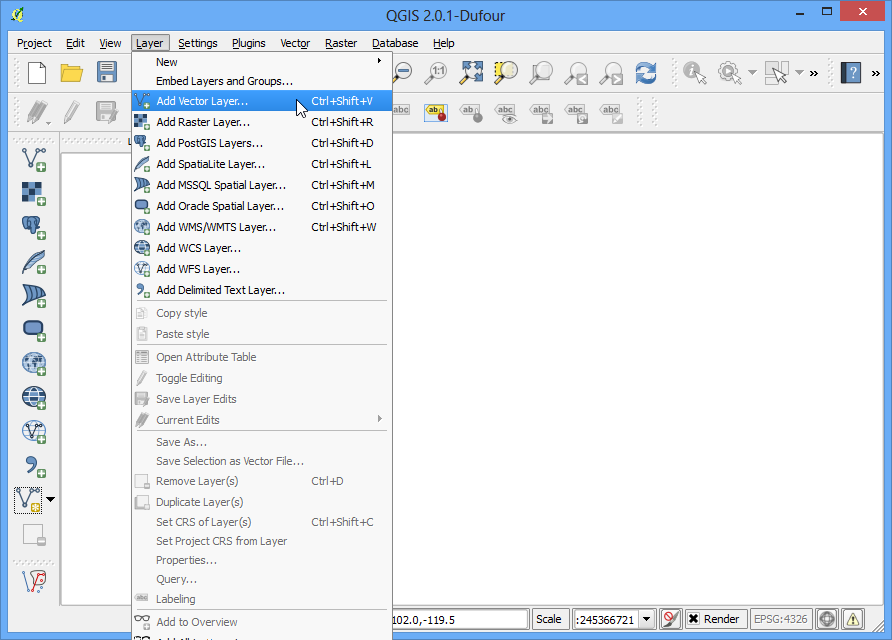

Выполнение пакетных файлов с помощью среды обработки
[ Download PDF A4 Letter ]
QGIS 2.0 представляет новую концепцию: Среда обработки. Ранее известная как Секстанта, Среда обработки предоставляет среду QGIS, которая может выполнять алгоритмы обработки данных. Она содержит удобный интерфес, исполняющий пакетные файлы и позволяющий легко использовать алгоритмы на несколько слоёв. Пакетные файлы полезны, если Вы хотите автоматизировать повторяющиеся задачи.
Обзор задачи
Мы возьмём несколько глобальных векторных слоёв и обрежем их до Африки одним пакетным файлом.
Другие навыки, которые Вы узнаете
Получить данные
Natural Earth имеет несколько глобальных векторных слоёв. Скачайте следующие слои:
После скачивания распакуйте содержимое всех архивов в одну папку.
Источник данных: [NATURALEARTH]
Процедура
Перейдите в .

Найдите распакованный ранее файл ne_10m_admin_0_countries.shp и нажмите Открыть.

Так как мы хотим обрезать глобальные слои только в Африке, сначала нам нужно сделать слой, содержащий полигон с континентом. Слой со странами имеет атрибут, называющийся CONTINENT. Мы можем использовать инструмент Роспуск, чтобы слить все страны одного континента в один полигон.

Откройте Роспуск из меню .

Выберите ne_10m_admin_0_countries как Входной векторный слой. Поле роспуска должно быть CONTINENT. Назовите выходной файл continents.shp и отметьте галочку Добавить результат на холст.
Примечание
Если Вы хотите слить ВСЕ полигоны независимо от их атрибутов, выберите – Роспуск всего – как Поле роспуска. Это скомбинирует все полигоны в один слой и предоставит вам один цельный полигон.

Процесс роспуска может занять некоторое время. По окончанию Вы увидите новый слой continent, добавленный в QGIS. Используйте инструмент Выбор одного элемента с панели инструментов и нажмите на Африку, чтобы выбрать полигон континента.

Щёлкните правой кнопкой мыши по слою continents и выберите Сохранить выделение как....

Назовите выходной файл africa.shp. Так как нам важна лишь форма, а не атрибуты, можете поставить галочку у Пропустить создание атрибутов. Убедитесь, что галочка Добавить сохранённый файл на карту отмечена и нажмите ОК.

Теперь у Вас в QGIS появится слой africa, содержащий полигон всего континента. Настало время обрезки. Откройте меню .

Среди доступных алгоритмов найдите Обрезка из меню . Вы также можете использовать Поиск, чтобы легче найти алгоритм.

Щёлкните правой кнопкой мыши на алгоритм Обрезка и выберите Выполнить как пакетный файл.

В окне Обработка пакетного файла, на первой вкладке Параметры мы укажем входные данные. Нажмите на ... рядом с первой строкой в столбце Входной слой.

Проследуйте в папку, куда Вы распаковали все глобальные слои. Зажав кнопку Ctrl, выберите все слои, которые хотите обрезать. Вы также можете использовать Shift или Ctrl+A, чтобы сделать множественное выделение. Нажмите Открыть.

Вы заметите, что столбцы Входной слой будут автоматически заполнены выбранными слоями. Вы можете использовать кнопку Добавить строку, чтобы включить больше файлов. Нажмите на ... возле первой строки и добавьте africa.shp как Слой для обрезки. Так как слой для обрезки везде одинаковый, Вы можете просто дважды щёлкнуть название столбца Слой для обрезки, и он будет скопирован во все строки. Теперь нам нужно указать имена выходных файлов. Нажмите на ... рядом с первой строкой в столбце Результат.

Перейдите в папку, куда вы хотите сохранить выходной слой. В качестве имени задайте output_ и нажмите Сохранить.

У Вас откроется новое окно Настройки автозаполнения. Выберите Заполнить значениями параметра как Режим автозаполнения и Используемый параметр как Входной слой. Эта настройка добавит имя входного файла в выходной файл вместе с заданным ранее output_. Это важно, чтобы выходные файлы имели уникальные имена и не переписывали друг друга.

Теперь мы готовы выполнить пакетный файл. Нажмите Выполнить.

Алгоритм обрезки будет выполнен для каждого из входных файлов и создаст указанный выходной файл для каждого. Когда процесс будет завершён, Вы увидите новые слои в QGIS. В них все глобальные слои будут правильно обрезаны так, как Вы указали.